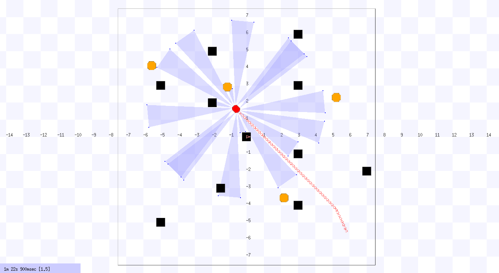

A published IEEE research study proposing and evaluating four novel heuristic functions for path planning in uncertain and dynamic environments — where obstacles move at arbitrary velocities and unpredictable directions. Algorithms were benchmarked across simulation time and travel distance using the Player/Stage robotics simulator.
Path planning for mobile robots is one of the hardest problems in robotics — and it becomes significantly more complex when obstacles move at arbitrary velocities and unpredictable directions. Prior research had largely focused on static environments. This paper addresses the gap: real-time path planning in genuinely uncertain and dynamic environments, where no prior information about obstacle behavior is available.
The environment is modelled as an undirected weighted graph G = (V, E), with vertices placed at random coordinates and all nodes strongly connected via an adjacency matrix. When the robot detects a blocked edge, it sets that edge weight to infinity and immediately re-plans — all within a strict real-time constraint using the same graph, preserving memory of previously encountered obstacles.
The core contribution of this paper is a set of four novel heuristic functions (h1–h4) designed to be plugged into GBFS and A* — and benchmarked against Dijkstra's and an Optimized Cost Function (OCF) version of A*. Experiments were run across static, fixed-position dynamic, and random-position dynamic obstacle environments with 10, 15, 20, and 25 obstacles each.
The key insight: pursuing the optimal path is not always the best strategy. A heuristic that initially expands more nodes (exploring sub-optimal paths) can help a robot escape obstacles faster, then converge to optimal as it approaches the goal. This motivated the design of the adaptive h4 heuristic — the paper's primary contribution.

Four heuristic functions were designed and integrated into GBFS and A* for comparative evaluation. All four are admissible — they never overestimate the true cost to the goal — which guarantees optimality when conditions allow. The h4 heuristic is the paper's core innovation: an adaptive function that adjusts its behaviour every iteration of the navigation loop.
The simplest admissible heuristic — straight-line distance from any node to the goal. Always less than the true cost, so it often over-expands unnecessary nodes and slows convergence. A useful baseline.
Admissible · SimpleUses the true cost from any node to the goal, computed via single-source shortest path from the goal. Always optimal and always admissible — but follows the optimal path so rigidly that it can get stuck behind obstacles without exploring alternatives.
Admissible · OptimalSubtracts a small fractional quantity (Euclidean distance ÷ total nodes) from the true cost. Admissible because it always stays below h*. Improves over h2 in some scenarios but uses a constant N — making it unable to adapt dynamically to environment changes.
Admissible · CombinedThe paper's core contribution. Uses the loop iteration counter i to adapt with each re-plan: early iterations expand more nodes (sub-optimal, fast obstacle escape); later iterations converge to the optimal path near the goal. Consistently the best performer for simulation time across almost all obstacle configurations.
★ Best PerformingConsistently achieves the lowest coefficient of variation (CV) for simulation time across static, fixed-position dynamic, and random-position dynamic environments — for 10, 15, 20, and 25 obstacles. CV as low as 16.5% (static) and 17.6% (10 dynamic obstacles).
GBFS with h4 achieves the lowest CV for travel distance in static environments (10.4%) and random-position dynamic environments (15–25 obstacles). Dijkstra's wins for travel distance with fixed-position dynamic obstacles, reflecting its shortest-path bias when direction is predictable.
| Algorithm | Heuristic | Mean Time (s) | Std Dev | CV (%) |
|---|---|---|---|---|
| A* | h4 (Adaptive) | 52.5 | 8.7 | 16.5% |
| A* | h2 (True Cost) | 61.0 | 12.6 | 20.7% |
| A* | h3 (Combined) | 63.1 | 15.5 | 24.5% |
| Dijkstra's | — | 59.4 | 18.2 | 30.6% |
| A* | h1 (Euclidean) | 65.2 | 26.7 | 41.0% |
| Language | C++ |
| IDE | Eclipse CDT 3.8 |
| Simulator | Player/Stage multi-robot simulation environment |
| OS | Ubuntu 14.04 LTS (32-bit) |
| Hardware | Intel Core i5-2430M · 2.40 GHz · 8 GB RAM |
| Algorithms | Dijkstra's · GBFS · A* · Optimized Cost Function A* |
| Metric | Coefficient of Variation (CV) — simulation time & travel distance |
| Published | IEEE 19th ICCIT · Dec 18–20, 2016 · North South University, Dhaka |
Source code and simulation files available on GitHub.